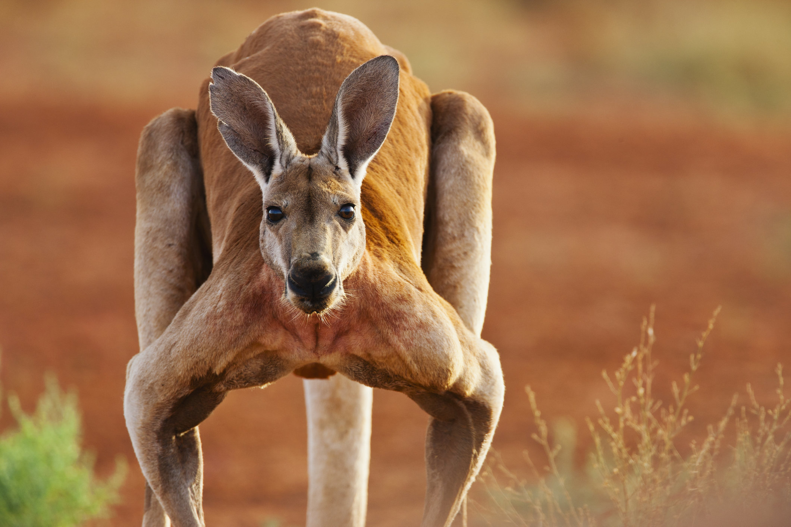

KANGAROOS
Kangaroos are marsupials from the family Macropodidae (macropods, meaning "large foot").
In common use, the term is used to describe the largest species from this family, the red kangaroo, as well as the antilopine kangaroo, eastern grey kangaroo, and western grey kangaroo. Kangaroos are indigenous to Australia and New Guinea. The Australian government estimates that 42.8 million kangaroos lived within the commercial harvest areas of Australia in 2019, down from 53.2 million in 2013.As with the terms "wallaroo" and "wallaby", "kangaroo" refers to a paraphyletic grouping of species. All three terms refer to members of the same taxonomic family, Macropodidae, and are distinguished according to size. The largest species in the family are called "kangaroos" and the smallest are generally called "wallabies". The term "wallaroos" refers to species of an intermediate size
WHERE TO FIND THEM?
After the Warthogs cage and next to the elephants